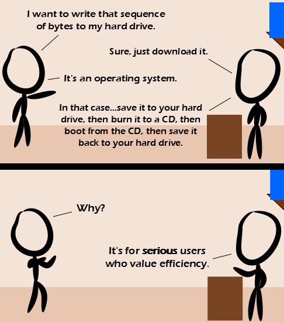

Comic JK 841
When I Feel Like It
⇤
<
?
>
⇥

⇤
<
?
>
⇥
Forum
.
RSS
.
Digg
.
Facebook
.
Reddit
.
Twitter
.
Stumbleupon
Enter your thoughts on number 841 here. Please, no spamming, trolling, or replacing the last thing with a reference to the comic and downloading it to your hard drive and burning it to a CD. doesnt go for ubuntu, u can install ubuntu from within windows, just sayin' >but not in its own partition, sadly. At least you can use a USB stick to install it at least. >>You can set up any OS from a USB stick, so long as the motherboard supports boot from USB. If your OS doesn't lock down the drives you sould be able to install it directly. Great news for QDOS users from Circa 1980! Come on man, you know 't'sn't that simple The whole BIOS boot system used by current computers (as in, text mode only, press F12 to show boot menu, just one boot option per drive) is completely outdated. I'm not sure how better EFI is though. This is silly. I can boot various minimal Unix-like OS's from USB, PXE, or a HDD, and use something like wget or curl piped to dd. I can even boot from HDD and create a runtime ramdisk and then unmount the HDD before overwriting. There are many OS's that are much more flexible than Windows.... get with it. I haven't had a CD/DVD drive installed in a computer for many years, yet have installed/upgraded dozens of operating systems including Windows. I guess I'm just a magician. >The problem is that most OSs still only offer the option to install from CD (I don't care if you _can_ do it without, technically you can do everything from MS-DOS, we're talking about easy, just-work options), and the second alternative is USB-stick which is still stupid (you have a hard disk with plenty of space). I downloaded your mother, burned her on a CD, and installed her on my dick. >you had insufficient dick space >>Should have used a hard dick. >>>She inserted her strapon in your floppy drive Last night I installed windows from the hard drive.. I used a linux usb stick to format the partition then just copied the install files onto the now empty drive and restarted. installed superfast. windows can install itself from within windows to without having to be burned to a CD. UNetbootin can put a live operating system directly onto a hard drive Technically, you can write the bytes just by downloading them. To actually use them, requires more steps. I didnt see any comments about why you might want to unmount the drive in order to partition it, or how GRUB loader affects a windows install vs how a windows install affects GRUB